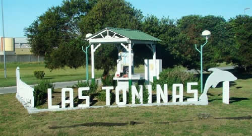

Real Chubut - Agencia de Noticias


Una temporada en Las Toninas (quizá dos)

Recordaba el analista Claudio Zuchovicki, en una participación reciente en el cierre de la Feria del Libro de Buenos Aires, una frase que siempre mencionaba Tomás Bulat: "Argentina es un país de siete temporadas en Miami y dos en Las Toninas". Era una forma de metaforizar sobre la manera de vivir culturalmente desde la clase media/alta el tipo de cambio en el país. Bulat aseguraba que ese sector de la sociedad se había acostumbrado desde los tiempos de Martínez de Hoz a disfrutar de varias temporadas de un dólar barato, que le permitía, entre otras cosas, viajar al exterior con cierta comodidad económica (y con Miami como faro), sin detenerse a pensar, quizá, en las consecuencias en la economía real de ese retraso cambiario. Pero como toda norma macro, tiene sus consecuencias inevitables: esos años de dólar bajo terminan casi como regla pétrea en una crisis cambiaria, con una posterior caída en los niveles de actividad. Y, en general, en una consecuente recesión. Comenzaba entonces el tiempo de olvidarse por unas temporadas de Miami, y pensar en unas bonitas vacaciones en el coqueto balneario local de Las Toninas. Según Bulat, este esquema se repitió tantas veces en la historia económica local, que gran parte de la sociedad, la que disfrutaba del eventual Miami (a veces en base al endeudamiento en cuotas), ya había desarrollado los anticuerpos para, primero, adelantarse a las sucesivas crisis (por ejemplo, resguardándose en el dólar) y, segundo, conformándose con la consecuente temporada de austeridad.
El recuerdo de Zuchovicki sobre Bulat parece ahora tener más actualidad que nunca. Y los argentinos probablemente tengamos que inaugurar psicológicamente la temporada en Las Toninas. Y quizá no sea una sola. Ahora Mauricio Macri deberá tener la templanza y la mente fría de ser el Presidente que conduzca este difícil pero inevitable proceso.
Todo indicaría que lo peor de la crisis cambiaria ya pasó. Podrá haber coletazos (como los del cierre del miércoles). Probablemente vuelvan las pruebas de algunos operadores del sistema financiero sobre qué tan firme está la barrera mayorista de 25 pesos que impuso el Banco Central. Incluso puede haber un nuevo salto cambiario. Pero, si se siguiera tanto la teoría económica de "los libros" como las vivencias "culturales" del mercado argentino, una corrida como la que se sufrió recientemente no debería durar más de tres o cuatro semanas. Todo apunta a que ese plazo se cumplió y que por algunas jornadas el Ejecutivo tendrá tiempo de pensar y sacar conclusiones sobre las consecuencias de lo vivido. Fundamentalmente, hacer una evaluación de daños y sacar consecuencias y enseñanzas.
Lo primero que deben saber Mauricio Macri y sus ministros, especialmente la conducción de la Jefatura de Gabinete, es que la última corrida no fue nada personal contra ellos. Y que no hay ningún acto de ilegalidad o golpismo en su contra. Simplemente, actores tradicionales de los mercados aprovecharon una oportunidad para hacer negocios. En definitiva, de eso se trata el capitalismo. Y, en este caso, los que lo aprovecharon primero fueron teóricos amigos y defensores de las políticas del Ejecutivo. Nada personal. Sólo negocios. Absolutamente legales y con las reglas de juego impuestas por el propio oficialismo. Esa es la primera enseñanza. Si Macri no quiere que le vuelva a suceder, no debe perseguir judicialmente a los actores, sino cambiar las reglas. Por ejemplo, impidiendo que fondos de inversión de alto nivel especulativo (los únicos que por ahora pueden aportar por la Argentina mientras el país sea calificado de Frontera), sigan desembarcando libremente en el mercado de Lebac.
Luego deberá pensar el Presidente sobre lo que llevó a su Gobierno a esta crisis, provocada por la salida de pesos de fondos de inversión internacionales. Esto es, fuego amigo. Lo que demostró la corrida es que, además del equilibrio de las variables económicas locales, entró en crisis el manejo de la economía. Parecería que Macri tomó nota de la situación al reconocer el miércoles en una muy saludable conferencia de prensa que a la conducción económica le faltó coordinación. O, dicho de otra manera, faltó una jefatura que entienda cómo manejar diferentes departamentos que deben confluir en una meta común con objetivos claros. Cometería un error Macri si pensara que esta situación se dio sólo por el manejo de los primeros tiempos de la crisis desatada el 25 de abril. La falta de coordinación viene de mucho tiempo atrás y se vivió claramente en decisiones como la liberación de los combustibles, la aplicación del impuesto a la renta financiera, el lamentable 28-D y la manera de aplicar en el primer cuatrimestre del año los aumentos de tarifas de servicios públicos. Nada de ello ayudó a crear confianza o aplacar la presión inflacionaria.
El modelo de manejo de la economía es privativo del Presidente. Es el jefe de Estado el que debe elegir un esquema donde se sienta cómodo y contenido. Nadie garantiza que un esquema de "ministro fuerte" puede dar mejores resultados que otro más "coral" con el poder repartido. Pero si la opción es esta última, para que la formula sea exitosa requiere coordinación, concentración, confianza, eficacia y conocimientos máximos. Virtudes que evidentemente faltaron. Hasta el viernes pasado. Desde ese día a la tarde parecería que la tendencia cambió. Se vio una jefatura de Gabinete, un Banco Central y un Ministerio de Finanzas actuando coordinadamente con privados y dominando la situación desde la primera hora del lunes. También parece haber coordinación en la manera en que comenzarán las negociaciones con el Fondo Monetario Internacional (FMI). El mercado y los agentes económicos coinciden en que lo mejor para una crisis es un ministro de Economía fuerte que tome decisiones "a botonera completa". Pero, si no se lo acepta por cuestiones políticas, la coordinación que tendrá que mostrar el Gobierno de Mauricio Macri hacia los mercados será máxima. La vara ahora está muy alta, el margen de error es mínimo y es nula la capacidad de aceptación de "mensajes de humo". Será el momento, ahora en serio, de apoyarse en hombres como Federico Sturzenegger o Luis Caputo, que mostraron capacidad de reacción y coordinación. Y comienza el tiempo para que Nicolás Dujovne demuestre que también está en condiciones de participar del equipo. Y de Marcos Peña de entender que es un funcionario valioso, honesto y útil para el Ejecutivo, pero que debe comprender que el manejo de una economía en crisis depende de conocimientos profundos que, evidentemente, el jefe de Gabinete puede no tener. No es un pecado y es de hombre capaz y responsable darse cuenta.
Comienza ahora un capítulo clave en la gestión Macri: negociar con el FMI. Las condiciones parecen ser inmejorables. El centro del mundo quiere ayudar al país. Donald Trump ya tomó la decisión de dar todo el apoyo posible y evitar el renacimiento de un foco populista en uno de sus países considerados aliados y en una región clave como América Latina. Christine Lagarde quiere terminar su gestión en el Fondo con un ejemplo exitoso de salida de crisis con ayuda del organismo. El resto del mundo no pondría trabas. En definitiva, habrá viento a favor para que el país cierre un acuerdo con el FMI que, como afirmó Luis Caputo, le permita a la Argentina despejar la incógnita financiera. Pero deberá tener en cuenta Macri algunas máximas que no podrá negociar: 1) el FMI no financiará una corrida cambiaria ni financiera; 2) el ajuste del gasto público (mucho o poco) será inevitable; y 3) habrá una caída en el ritmo de crecimiento de la economía.
En parte tuvo suerte Mauricio Macri. La crisis llegó en el segundo trimestre del año. Aunque el país inicie un proceso recesivo, tendrá tiempo de recuperación y podrá llegar a las elecciones de 2019 con una economía en crecimiento. Si hubiera aparecido unos meses después, su destino político hubiera sido complicado. Los argentinos hubiéramos votado desde Las Toninas.
Fuente: Ambito